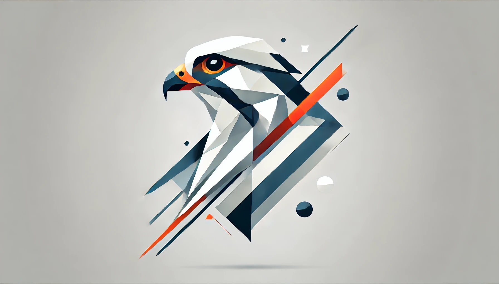

Johan Falk · AI-strateg och föreläsare
Jag hjälper organisationer, skolor och beslutsfattare förstå vad AI-utvecklingen faktiskt innebär – och vad den kräver av dem.
Boka föreläsning eller workshop
Medverkat i och anlitad av
Engagerande och faktabaserade föreläsningar om AI – för lärare, skolledare, myndigheter och organisationer. Anpassas alltid till målgruppen.
Praktiska halvdags- eller heldagsworkshops där deltagarna lär sig använda och förstå AI på djupet. Konkret och tillämpbart direkt.
Hjälper organisationer att tänka igenom sin AI-strategi – möjligheter, risker och kloka nästa steg. Oberoende och utan agenda.
Längre utbildningsinsatser för exempelvis skolpersonal eller myndighetsanställda. Kan kombineras med löpande handledning och uppföljning.
Organisationer med begränsade medel och viktiga ändamål – folkbildning, ideell verksamhet, skolor utan budget – är välkomna att höra av sig. I rätt sammanhang håller jag föreläsningar gratis eller kraftigt rabatterat.
Jag har följt AI-utvecklingen på heltid sedan 2024 – och med stor intensitet sedan 2018. Jag har lett Skolverkets AI-arbete, skrivit åtta böcker om AI, och höll föreläsningar och kurser om AI varje vecka.
Min bakgrund är bred: fysik, journalistik, matematik, lärarutbildning och webbutveckling. Det gör att jag kan förklara komplex teknik på ett sätt som är begripligt och relevant, oavsett om du är rektor, beslutsfattare eller IT-chef.
Jag bryr mig genuint om att AI-utvecklingen går bra – för samhället, för skolan, och för oss som individer.
Läs mer om mig →Jag har skrivit åtta böcker om AI – för barn, lärare, beslutsfattare och nyfikna vuxna.
Intresserad av en föreläsning, workshop eller rådgivning? Hör av dig så pratar vi om vad som passar er bäst.
Snabbaste vägen:
Skicka ett mail